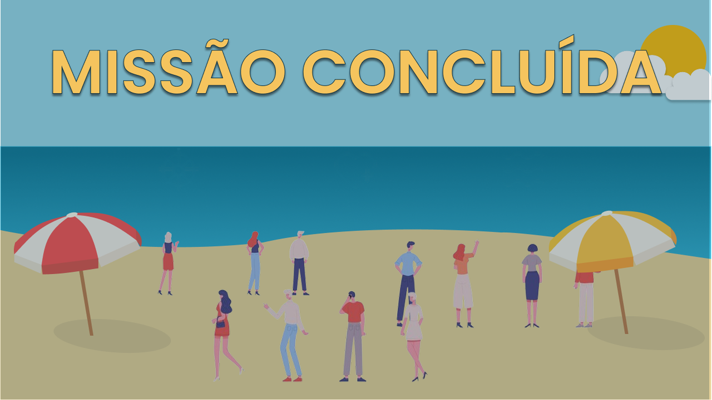

WaveRun & Rescue
Controles
Utilize as seguintes teclas:
- ↑ Ir para a esquerda
- ↓ Ir para a direita
- → Acelerar
- ← Dar ré
Objetivo
Desvie dos obstáculos e salve o maior número de pessoas que conseguir.
Evite
- Colidir com os obstáculos
- Esquecer de fazer resgates
- Esquecer de mudar de veículo
Resgates
Busque as pessoas que estão em perigo! Aproxime-se delas para concluir os resgates.
Evolução
Cada veículo suporta uma quantidade de passageiros e tempo específico para o resgate.
| Veículo | Resgates | Tempo Máximo |
|---|---|---|
| Jet ski | 3 | 1 minuto |
| Lancha | 14 | 3 minutos |
| Navio | 40 | 6 minutos |
Créditos
Integrantes
- Anna Paula Alves Silva
- Dilly Martins da Silva
- Laura Rayssa Souza Araújo
- Rafaela Carvalho Barcos Mello
Tecnologias
- HTML5
- CSS3
- JavaScript (ES6)
- Canvas (API 2D)

Missão concluída!
0,0 kmpercorridos
0pessoas resgatadas
0 km/hvelocidade máx.
Carregando...